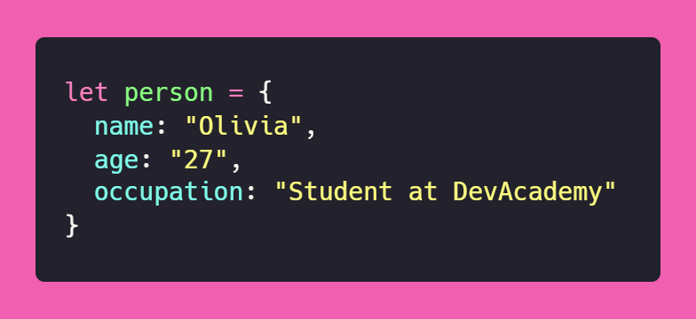
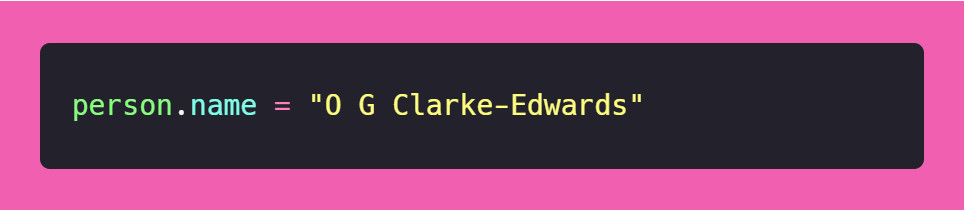
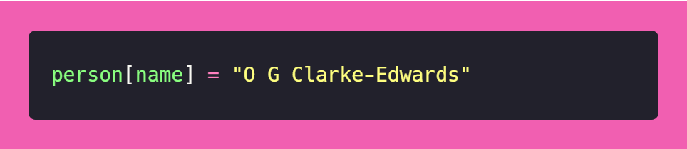
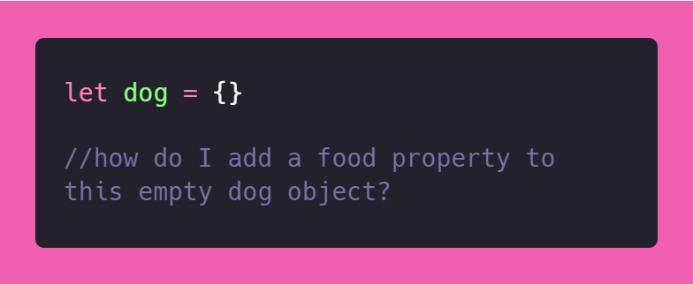
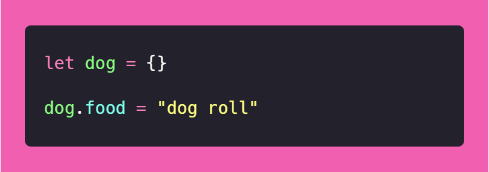
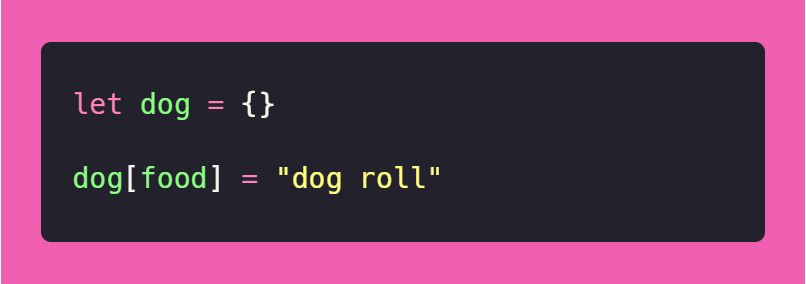
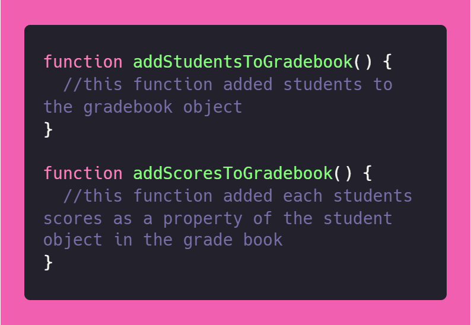
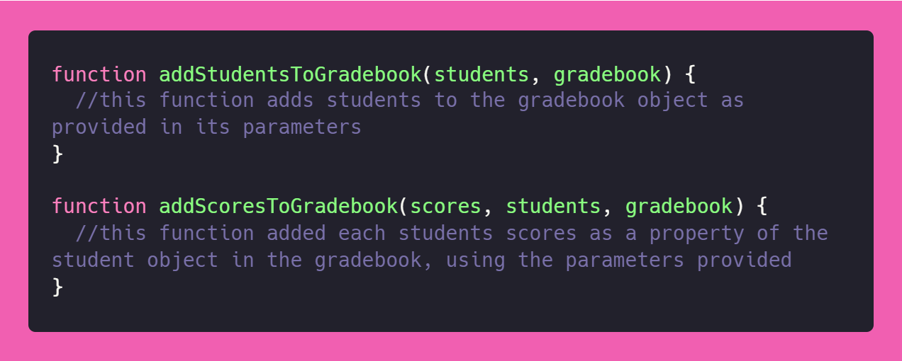

A post discussing problems, solutions and reflections on problem-solving techniques when writing javascript.
context
In order to practise specific programming skills in JavaScript we were given simple exercises called Katas. During the first kata I faced a simple problem.
As a language JavaScript focuses on something called objects. These objects are similar to objects in the real world - we could have a tree, a chair, a human or a car object. JavaScript objects exist in the world of code and can hold information about specific objects and their properties. For example, a chair might have the material property of wood. A person might have a name property of “Olivia.” Properties and objects exist in key value pairs, which sit inside an object. A person object, called person with three properties, looks like this:
It is simple to change a property within an object, we simply refer to the object and the property, and assign it a new value, like this:
Or, like this:
Both will result in the name property of the person object being changed to “O G Clarke-Edwards”.
problem
The problem that arose for me was that I didn’t know how to add a new property to an existing object which didn’t already have that property.
solution
A quick Google search brought up the relevant documentation - I didn’t even open any pages, just read the sample text below the first link and was away laughing. The solution is that adding a key-value pair to an object is done in the same way as changing an existing property. When the code runs, it looks for the key, and if the specified key doesn’t exist, it creates a new one. So…
or...
will result in a dog object with the property of food set to “dog roll”.
feelings
I was a little hard on myself with this problem, because for some reason I felt like I should know how to do this already, but looking up the answer was a quick reminder of how this should work. I felt relieved when I saw that the answer was so simple.
learning
I learnt how to add a key-value pair to an existing object that doesn’t already contain the required property. I also learnt that I expect myself to know everything, which is a little unreasonable and unnecessary, considering that everything is but a quick Google away and I am only just learning to use JavaScript.
context
In JavaScript you can create little tools called functions, which do tasks for you. You can hand them stuff (input) and they can return stuff (output). You can also get functions to manipulate, create or get rid of stuff. If you write a function, you can use that function over and over again! If you write the right functions, your future self can be grateful to your clever function writing self, because the function does the clever stuff over and over with NO EXTRA BRAIN POWER required!
In one kata, we had to add student objects to a gradebook, and give them a property which contains all their test scores. In order to add the students to the gradebook and add scores, I wrote two functions.
The two functions that I initially created manipulated an existing gradebook, student array (you can think of an array as a collection of data) and scores array that had been provided to us for our challenges, within our program.
The final task was to write a function called enterScores(gradebook, students, scores) which gets handed an empty gradebook, an array of students and an array of scores and adds the students as objects into the array, and these scores as properties.
problem
I wanted to use my existing functions to add the given students and scores to the newly received gradebook object. But, my initial functions referred to the gradebook, students and scores provided earlier in my program, not new ones specified at the time of calling the function.
solution
Instead of throwing my hands and my functions up into the air in despair, I called upon the higher powers of my brain to provide me with guidance. Using testing to steer me in the desired direction, I decided to parameterise the functions I had created earlier. That is, instead of just letting them grab their own stuff to work with, I would tell them what they were allowed to work with, and create a pipeline for them to get the gradebook, scores and students when calling the function.
This way I could pass the provided parameters to my existing functions and utilise my previously written code in an effective and elegant way. Parameterizing my functions also meant that if I had to use these functions more frequently in different contexts, they would be generally applicable, rather than being stuck to specific variables.
feelings
I had fun trying to wrangle my functions into a form that efficiently and effectively solved my problem. It was frustrating at times, but good frustrating because it provided my brain with something to wrestle with.
learning
I learnt that generalising functions is super important - this could be a good thing to have known when I initially wrote my functions so that I didn’t have to spend time reworking them later. Adding parameters to my function instead of using external variables made them transferable.
I learnt about myself that I like to find clever and clean ways of implementing solutions, and that I enjoy the challenge of simplifying my code and increasing its functionality.
The following is a reflection on how confidant I feel on using each problem-solving technique that we have learnt about this week.
pseudocode
I feel quite confidant about using pseudocode in principle... okay - I kinda skipped the pseudocode task that we were meant to do by accident. Pseudocode is the practice of writing out steps that you want your code to execute in natural language - in my case, English.
My reflection on pseudocode is that I feel quite confident about using it if I need to, but that I often just dive in and forget to lay out a plan for my code beforehand. I think pseudocode would be a great tool for me to practise using more, in order to slow down and really plan out my approach to a problem.
My natural reaction to the idea of pseudocode is that it sounds like making coding boring, but my rational reaction is that pseudocode seems like a smart idea for writing better code more efficiently!
trying something
Super comfortable just trying something out. Love this problem solving technique - I might utilise it a little too much. I enjoy a bit of trial and error, but it can become frustrating without the aid of other problem solving measures.
rubber ducky method
Not super confidant with using this. I like talking to flesh and blood people about my problems though, so maybe this would be helpful for me. Great concept - actually I think I use this one without realising it. My version is just called the Discord ducky… I post the problem on Discord and then I figure out the answer before anyone has a chance to respond. Top notch technique - kinda feel like my technique kills two birds with one stone because if I DON’T figure out the answer, then I’m also “asking my peers/coaches for help” at the same time as rubber duckying. I guess rubber duckying eliminates the part about wasting other people's time… I think I should try the cute cactus method sometime!
error messages
I feel pretty confident about consulting error messages for problem-solving. Top notch problem solving technique. Error messages are literally the best. Especially when combined with Googling. Okay, some error messages suck, but there’s nothing better than a well-formulated, informative error message to get the show back on the road.
console.logging
Not super duper confidant with this one, but definitely improving swiftly because I have realised that console.log() gives the ultimate insight into what my code is ACTUALLY doing. Praise be to console.log()!
Googling
Love Google, feel pretty confident about problem solving using Google for the most part. My good friend Google has all the answers. Sometimes incomprehensible ones, but when it comes to JS documentation, it's pretty straightforward and helpful. MDN is an insanely useful resource, especially when the main problem is just syntactical chaos. Love me a good Google search full of typos because I’m racing to get solutions.
asking peers for help
Not super confident. A little scared of peer judgement, eek. Peers are great in theory though. I've received some great advice from my homegroup already. Haven’t really had a chance to get help from peers yet but definitely open to this. I have noticed when I have tried to help people I get so excited and my help is super chaotic, but I think it's cool for us to work together!
asking coaches for help
Pretty confidant although I feel like I'm almost too active in Discord, so I feel awkward. Good for weird problems and for when Google gives aforementioned incomprehensible answers!
improving process with reflection
Not super confident. Can do the reflection part but I don't know if it actively improves my problem solving process. I hate this but I think it's a good one. I think I just find it a little boring and I find it hard to be systematic because it just seems super tedious. The research says it works though. I guess this is a reflection right now, so it's not too bad really!